Guía completa de MedCita. Probarla y configurar WhatsApp con Meta.
Credenciales de prueba, qué explorar según tu rol, el flujo de una cita con lo que recibe el paciente por WhatsApp y correo, y la guía para que el equipo o el cliente configure el envío de WhatsApp con Meta (o decida usar Twilio).
medcita-frontend.onrender.com · Versión 1.0 (cierre del Sprint 7) · 2026-10-21
Contenido
Cómo está organizada esta guía
Parte 1 — Probar MedCita (para quien prueba la app: admin, médico o secretaría).
1.1
Antes de empezar: el WhatsApp de prueba
1.2
Credenciales de prueba
1.3
Qué probar según tu rol
1.4
Cómo agendar una cita, paso a paso
1.5
Lo que recibe el paciente: WhatsApp y correo
1.6
Otras pantallas: pacientes, disponibilidad, administración
1.7
Contraseña: cambiarla o recuperarla
Parte 2 — Configurar WhatsApp con Meta (para el equipo técnico o el cliente que pone MedCita en marcha).
2.1
Meta o Twilio: cuál elegir y cómo cambiar
2.2
Qué necesitas y cuánto tarda
2.3
Cuenta, app, número de prueba y destinatarios
2.4
Las dos plantillas de mensaje
2.5
El token que va en el servidor
2.6
Variables de entorno en Render
2.7
Comprobar que funciona
2.8
Problemas frecuentes
2.9
Pasar a un número real y mantenimiento
Los textos de los menús y botones de la aplicación están en inglés (My Schedule, Patients, Availability, Settings…); los mensajes que reciben los pacientes por WhatsApp y correo están en español.
Parte 1 · Probar MedCita
1.1 Antes de empezar: el WhatsApp de prueba
MedCita envía la confirmación y el recordatorio de cada cita por WhatsApp con la API de WhatsApp Cloud de Meta, usando dos plantillas aprobadas. Gracias a eso el mensaje llega aunque el paciente nunca le haya escrito al número, y ya no hace falta «unirse» a ningún sandbox.
Solo reciben WhatsApp los números registrados. Mientras la app use el número de prueba gratuito de Meta, solo llegan mensajes a un máximo de 5 teléfonos que el equipo haya agregado y verificado en el panel de Meta. A cualquier otro número el sistema lo intenta, pero Meta lo rechaza (error 131030) y no llega nada.
Para probar con tu teléfono
Pide al equipo que agregue tu número (con código de país, por ejemplo +593 98…) a la lista de destinatarios de prueba. Cómo se hace está en la sección 2.3.
Meta te envía por WhatsApp un código de verificación; compártelo con quien te está agregando.
Cuando aparezca como verificado, agenda una cita con tu número como paciente. Debe llegarte el mensaje en unos segundos.
Un paciente de ejemplo ya tiene un número real de prueba. En los datos de demo, Ricardo Andrade tiene el WhatsApp del equipo. Si usas tu propio número para probar, no lo pongas en el teléfono de un paciente de ejemplo (Juan Carlos Cevallos, María Elena Lasso, Ricardo Andrade…): el sistema identifica a los pacientes por teléfono y podrías sobrescribir su nombre.
Cuando el negocio use un número propio verificado, esta limitación desaparece (sección 2.9).
MedCita — Guía completa · Parte 1
Parte 1 · Probar MedCita
1.2 Credenciales de prueba
Estas cuentas existen en el entorno de demostración: puedes entrar directamente.
Rol
Email
Contraseña
Quién es
ADMIN
admin@medcita.ec
admin1234
Administrador de la clínica
DOCTOR
demo@medcita.ec
demo1234
Dr. Santiago Pérez — Medicina General
DOCTOR
dra.torres@medcita.ec
demo1234
Dra. Camila Torres — Pediatría
DOCTOR
dr.mendoza@medcita.ec
demo1234
Dr. Andrés Mendoza — Medicina Familiar
Solo para demostraciones. Estas contraseñas son públicas. Antes de cargar pacientes reales, el equipo debe cambiarlas (Settings → Update Password) o eliminar esas cuentas desde Manage Doctors.
Rol Secretaria. No hay una cuenta de secretaria de fábrica. Para probar ese rol, entra como admin → Manage Doctors → crea un usuario con rol «Secretary». Puede agendar, editar y cancelar citas de cualquier médico y ver el calendario combinado, pero no gestiona usuarios ni ve las analíticas.
1.3 Qué probar según tu rol
Si entras como Doctor
Ver tu calendario en My Schedule (semana, mes, día o agenda) y la leyenda de colores: confirmada, agendada, pendiente.
Agendar una cita nueva (sección 1.4) y, desde el detalle de la cita, Confirm Appointment o Cancel.
Ajustar tu semana laboral en Availability.
Buscar, crear y editar pacientes en Patients. El basurero solo funciona con pacientes que no tienen ninguna cita.
Actualizar tu perfil y cambiar tu contraseña en Settings.
Si entras como Admin
Ver el calendario combinado de todos los médicos, o elegir uno en el desplegable para ver solo su agenda.
Crear, editar o eliminar médicos, secretarias y administradores en Manage Doctors.
Ver las citas por médico y la distribución de carga en Analytics.
Todo lo que hacen administradores y secretarias con citas, pacientes y cuentas queda guardado en un registro de auditoría. Hoy lo consulta un administrador por la API (GET /api/admin/audit-log); todavía no tiene pantalla.
Si entras como Secretaria
Los mismos permisos de agenda que un admin. No tiene Manage Doctors ni Analytics.
MedCita — Guía completa · Parte 1
Parte 1 · Probar MedCita
1.4 Cómo agendar una cita, paso a paso
El flujo es el mismo para todos los roles: un admin o una secretaria eligen primero el médico en el desplegable de arriba; un doctor lo hace sobre su propio calendario.
Inicia sesión con cualquiera de las cuentas de la página anterior.
En My Schedule, pulsa New Appointment (arriba a la derecha).
Paso 1 de 3: busca un paciente existente o pulsa Create New Patient.
Paso 2 de 3: elige la fecha y un horario marcado FREE.
Paso 3 de 3: revisa la cédula (opcional), el correo (opcional) y las notas internas, y pulsa Confirm Appointment.
Sale el aviso «Appointment scheduled! Notifications are being sent.» La cita queda Pending; desde su detalle puedes pasarla a Confirmed o cancelarla (el navegador pide confirmar).
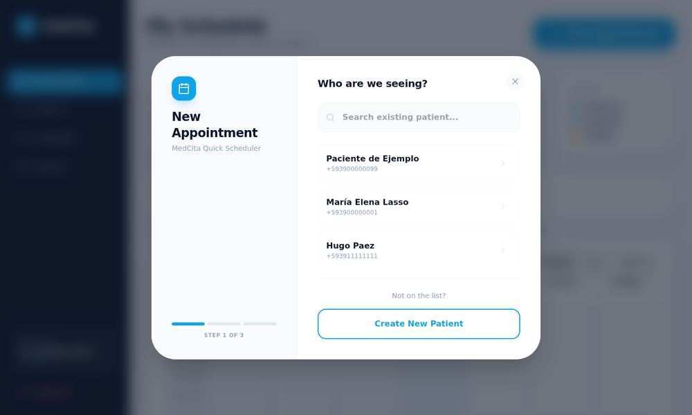
Paso 1: elegir el paciente.
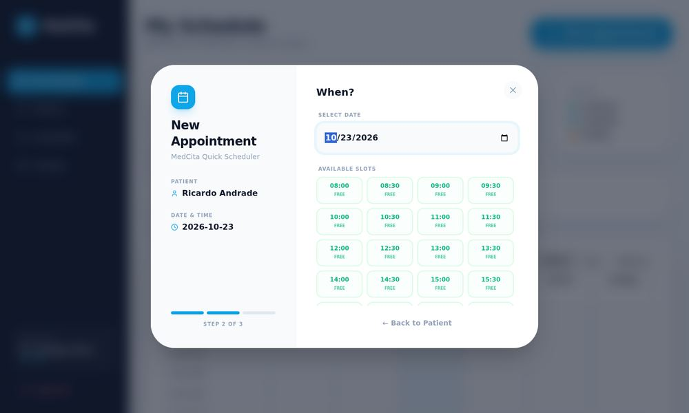
Paso 2: fecha y horarios libres.
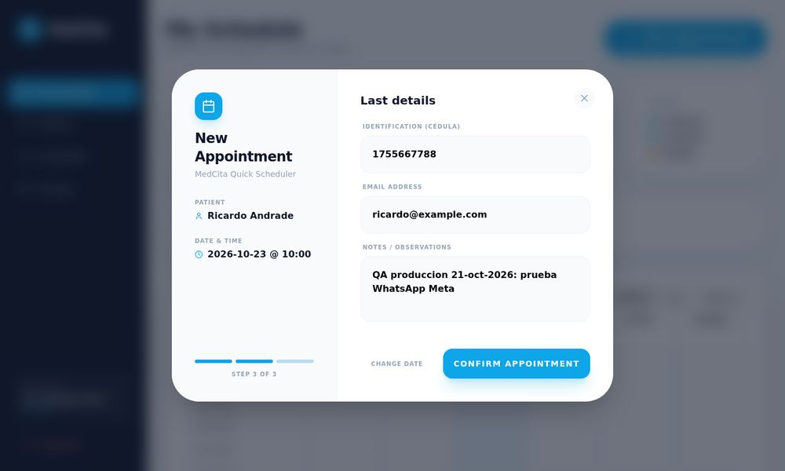
Paso 3: notas y confirmar.
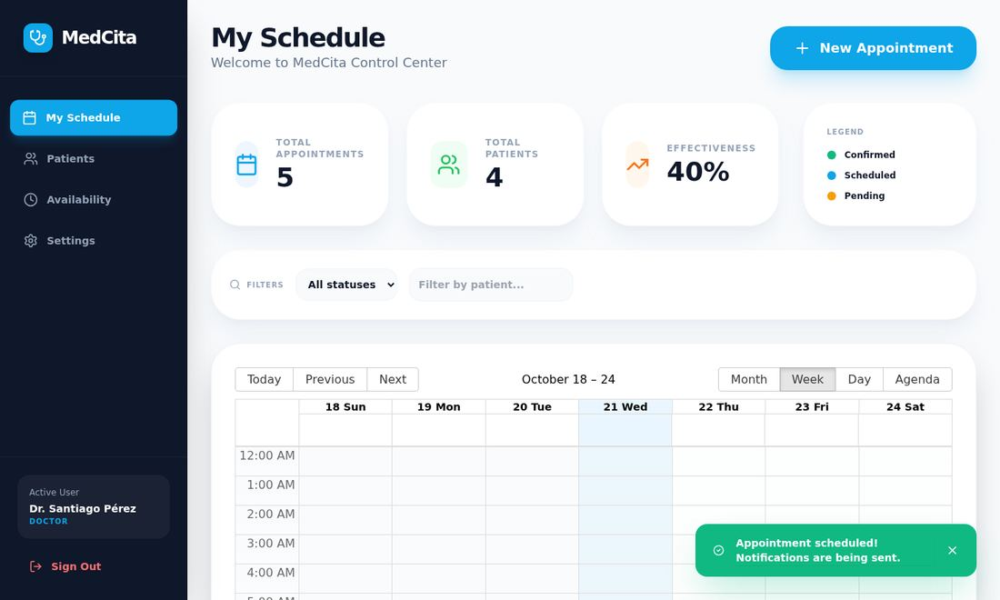
Cita creada: aviso de éxito y contador actualizado.
El sistema impide dos citas en el mismo horario, también al mover una cita, y bloquea las horas pasadas y las fuera de la jornada del médico. El recordatorio sale solo, una vez, cuando faltan menos de 24 horas para la cita.
MedCita — Guía completa · Parte 1
Parte 1 · Probar MedCita
1.5 Lo que recibe el paciente
Al agendar, el sistema envía en segundo plano la confirmación por WhatsApp (plantilla aprobada de Meta) y, si el paciente tiene correo, por email. Estas son capturas reales de una cita agendada en el sitio desplegado el 21-oct-2026:
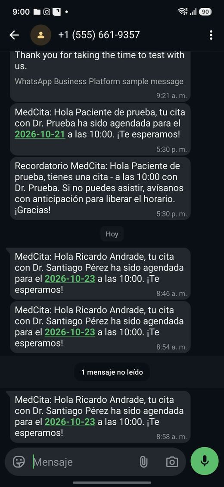
WhatsApp en el teléfono. Los dos mensajes de abajo son las confirmaciones de la cita; los de arriba son pruebas de envío del equipo.
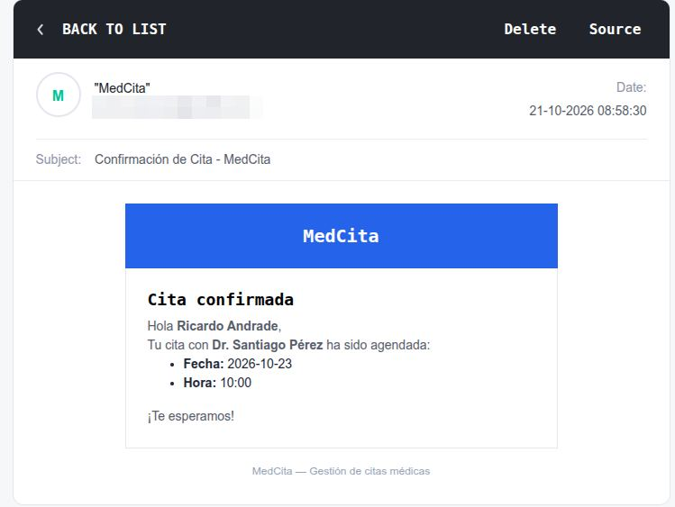
Correo «Confirmación de Cita — MedCita» en la bandeja de entrada.
Si el correo no aparece, revisa spam o promociones: el remitente es nuevo para muchos proveedores.
Texto del WhatsApp de confirmación: «MedCita: Hola Ricardo Andrade, tu cita con Dr. Santiago Pérez ha sido agendada para el 2026-10-23 a las 10:00. ¡Te esperamos!»
MedCita — Guía completa · Parte 1
Parte 1 · Probar MedCita
1.6 Otras pantallas
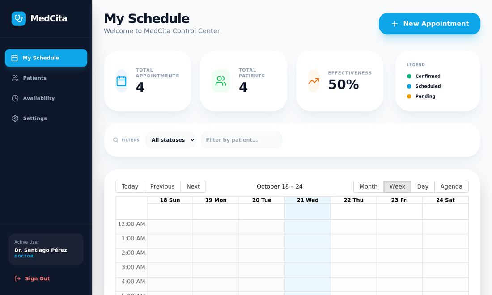
My Schedule: indicadores y calendario (semana, mes, día, agenda).
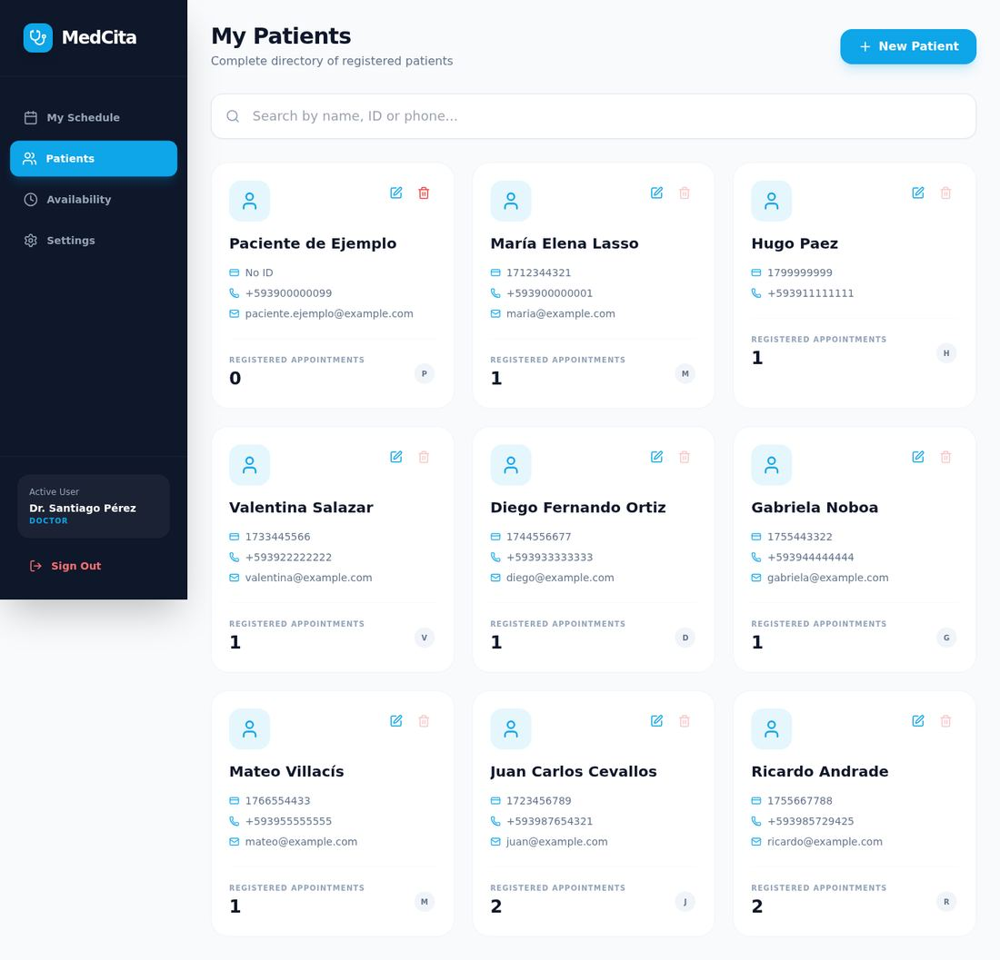
Patients: directorio con búsqueda, edición y contador de citas.
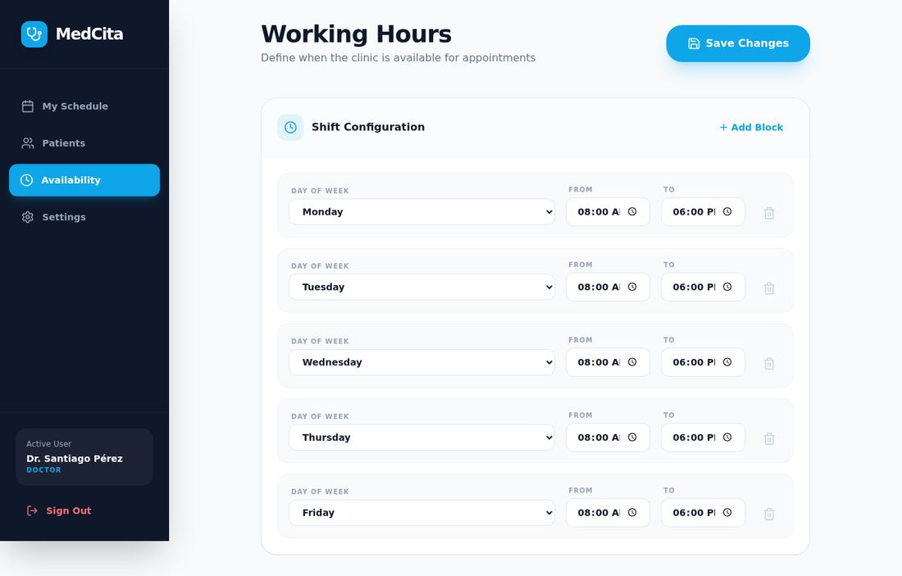
Availability: la jornada semanal de cada médico.
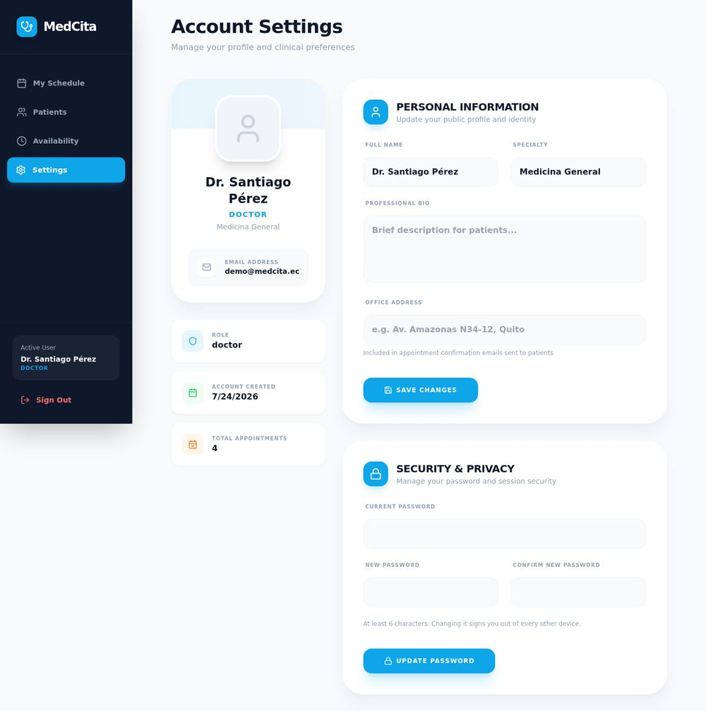
Settings: perfil y cambio de contraseña.
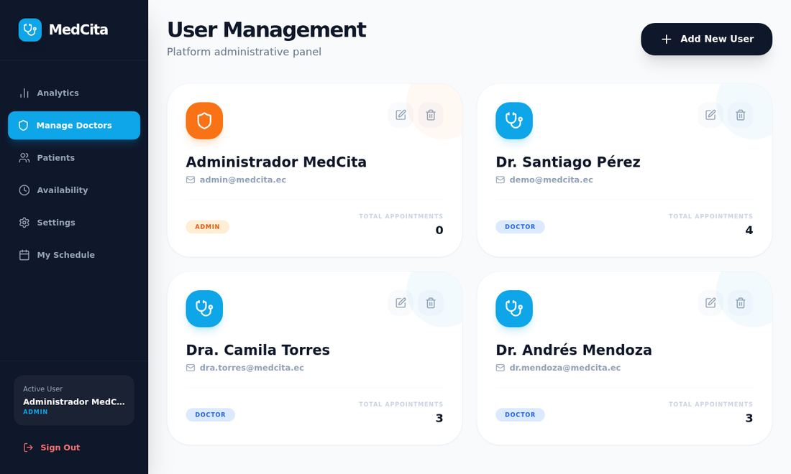
Manage Doctors (solo admin): crear, editar y eliminar usuarios.
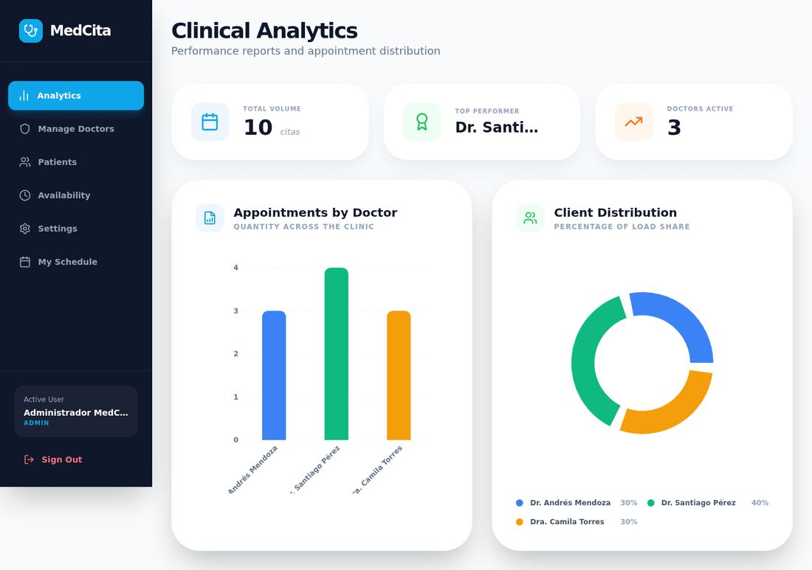
Analytics (solo admin): citas por médico y distribución.
Si una pantalla no puede cargar sus datos, la app lo dice con un mensaje de error y un botón de reintento; no muestra «0 citas» en silencio.
1.7 Contraseña: cambiarla o recuperarla
Cambiarla:Settings → Update Password. Pide la contraseña actual y la nueva; al cambiarla, las sesiones abiertas antes dejan de valer.
Recuperarla: en el login, Forgot password? envía un correo con un enlace de un solo uso que vale 60 minutos.
Seguridad: tras 5 intentos fallidos con un mismo correo, el acceso se bloquea 15 minutos.
Qué hacer con lo que encuentres
Cualquier cosa confusa, lenta o que no funcione es información valiosa. Cuéntalo al equipo con el detalle de la pantalla y el paso en que pasó.
MedCita — Guía completa · Parte 1
Parte 2 · Configurar WhatsApp con Meta
2.1 Meta o Twilio: cuál elegir
MedCita envía WhatsApp con un solo proveedor a la vez, elegido por las variables de entorno del servidor. El cliente decide; el código soporta los dos.
Meta Cloud API (recomendado)
Twilio
Se activa con
META_WHATSAPP_TOKEN y META_WHATSAPP_PHONE_NUMBER_ID
TWILIO_ACCOUNT_SID, TWILIO_AUTH_TOKEN y TWILIO_WHATSAPP_NUMBER, y que no estén las de Meta
Qué envía
Plantillas aprobadas en español
El mismo texto como mensaje normal (sin plantillas)
Llega a un paciente que nunca escribió
Sí (número de prueba: hasta 5 destinatarios registrados; número propio: cualquiera)
No con el sandbox: cada destinatario debe enviar join <código> y la sesión expira a las ~72 h
Pacientes reales
Número propio, negocio verificado y método de pago
Remitente de WhatsApp aprobado en Twilio. Fuera de la ventana de 24 h WhatsApp exige plantillas y el código aún no las envía por Twilio
Mantenimiento
Token de 60 días sin negocio verificado (el actual vence el 19-dic-2026)
Credenciales sin vencimiento
Si falla un envío
Queda el error en el log; no se reintenta por Twilio
Queda el error en el log
Orden en el código: Meta si tiene sus dos variables; si no, Twilio si tiene sus credenciales; si no, un modo simulado que solo escribe en el registro y no envía nada.
Cómo cambiar de proveedor (sin tocar el código)
A Meta: definir las dos variables de Meta. Tienen prioridad aunque las de Twilio sigan puestas.
A Twilio: borrar las dos variables de Meta y dejar las de Twilio.
A ninguno: borrar las de ambos.
Render redespliega al guardar. Después, prueba (sección 2.7).
Recomendación: en producción usar solo Meta y no cargar las variables TWILIO_* en Render: una sola ruta de envío y menos secretos guardados. Twilio queda para desarrollo local.
MedCita — Guía completa · Parte 2
Parte 2 · Configurar WhatsApp con Meta
2.2 Qué necesitas y cuánto tarda
El orden importa: las plantillas tardan en aprobarse, así que se crean lo antes posible y mientras tanto se configura el resto.
#
Qué se hace
Dónde
Tiempo
1
Cuenta de Facebook y registro de desarrollador
developers.facebook.com
10 min
2
Crear la app y el portfolio comercial
developers.facebook.com
10 min
3
Anotar el Phone Number ID y el WABA
Configuración de la API
2 min
4
Agregar los destinatarios de prueba
Configuración de la API
5 min
5
Crear y enviar a revisión las 2 plantillas
WhatsApp Manager
15 min + espera de Meta (minutos a 24 h)
6
Generar el token de usuario del sistema
Configuración del negocio
10 min
7
Variables de entorno
Render
5 min
8
Probar
Terminal y la app
5 min
Antes de empezar
Una cuenta de Facebook personal, de alguien que seguirá en el equipo: será dueña de la app y del portfolio comercial.
Un teléfono con WhatsApp por cada tester (máximo 5 con el número de prueba).
Acceso a las variables de entorno de Render.
Una terminal con el repositorio clonado y npm install hecho en backend/ (para la prueba de envío).
Hoja de datos para ir anotando
Dato
Dónde se obtiene
Para qué sirve
ID de la app
Panel de developers
Asignar el token
WhatsApp Business Account ID (WABA)
Configuración de la API
Consultar plantillas
Phone Number ID (no es el teléfono)
Configuración de la API
META_WHATSAPP_PHONE_NUMBER_ID
Token
Sección 2.5
META_WHATSAPP_TOKEN — secreto, nunca en el repositorio ni en capturas
Meta cambia los nombres de los menús con frecuencia y los traduce según el idioma de la cuenta. Aquí van en español con el nombre en inglés entre paréntesis; si no encuentras uno, búscalo por su nombre en el buscador del panel.
MedCita — Guía completa · Parte 2
Parte 2 · Configurar WhatsApp con Meta
2.3 Cuenta, app, número de prueba y destinatarios
Paso 1 — Cuenta de desarrollador
Entra a developers.facebook.com con la cuenta de Facebook del equipo y pulsa Comenzar (Get started).
Acepta las condiciones y verifica tu teléfono o correo. Al terminar verás el panel con tu lista de apps, vacía.
Paso 2 — Crear la app
Mis apps → Crear app (My Apps → Create app). Nombre, por ejemplo, MedCita, y un correo de contacto.
En los casos de uso elige el de WhatsApp: «Conectarse con clientes a través de WhatsApp» (Connect with customers through WhatsApp).
En ¿Qué portfolio comercial quieres conectar? elige uno o crea uno nuevo. La app debe quedar conectada a un portfolio: sin eso no aparecen después los permisos del token.
Revisa el resumen y pulsa Crear app. En el panel de la app, Casos de uso → Personalizar en el de WhatsApp; si pide aceptar permisos (whatsapp_business_messaging, whatsapp_business_management), acéptalos.
Paso 3 — Número de prueba y datos de la API
Dentro del caso de uso de WhatsApp, abre Configuración de la API (API Setup). Meta ya creó una cuenta de prueba con un número de prueba gratuito.
En Paso 1. Pruébalo anota el Phone Number ID y el WhatsApp Business Account ID (WABA). Son números largos; el Phone Number ID no es el teléfono.
Si Facebook te pide elegir cuentas, selecciona Test WhatsApp Business Account y su número, y confirma.
Paso 4 — Agregar los destinatarios de prueba (máximo 5)
Con el número de prueba solo reciben mensajes los números de esta lista; para cualquier otro Meta responde con el error 131030.
En Configuración de la API, en el campo Para (To), abre el desplegable y pulsa Administrar lista de números de teléfono.
Agregar número, con código de país (+593 98…).
Meta manda un código por WhatsApp a ese número; escríbelo en el diálogo. Repite por cada tester: deben quedar como verificados.
Para comprobarlo, en el mismo Paso 1. Pruébalo pulsa Enviar mensaje: llega la plantilla hello_world al tester.
MedCita — Guía completa · Parte 2
Parte 2 · Configurar WhatsApp con Meta
2.4 Las dos plantillas de mensaje
Meta solo permite que un negocio inicie una conversación con una plantilla aprobada; el texto libre únicamente se entrega dentro de las 24 h posteriores a que el paciente escribió. Como la confirmación y el recordatorio los inicia MedCita, se envían como plantillas. Se crean primero porque la revisión es lo más lento.
Dónde se crean
Desde el panel de la app: caso de uso de WhatsApp → Plantillas de mensajes (Message templates) → Crear plantilla; o desde WhatsApp Manager en business.facebook.com. Si pide elegir la cuenta, la de prueba.
Datos comunes a las dos
Categoría
Utilidad (Utility)
Idioma
Español (código es). No «Español (México)» ni «Inglés»
Encabezado, pie y botones
Ninguno
Tipo de variable
Número ({{1}}, {{2}}…), no nombre
Plantilla 1 — nombre cita_confirmada
MedCita: Hola {{1}}, tu cita con {{2}} ha sido agendada para el {{3}} a las {{4}}. ¡Te esperamos!
Ejemplos que Meta pide: {{1}} María Andrade · {{2}} Dr. Santiago Pérez · {{3}} 2026-10-21 · {{4}} 10:00
Plantilla 2 — nombre recordatorio_cita
Recordatorio MedCita: Hola {{1}}, tienes una cita {{2}} a las {{3}} con {{4}}. Si no puedes asistir, avísanos con anticipación para liberar el horario. ¡Gracias!
Ejemplos: {{1}} María Andrade · {{2}} mañana 2026-10-21 · {{3}} 10:00 · {{4}} Dr. Santiago Pérez
Pega el texto exactamente y completa los ejemplos. Pulsa Enviar (Submit): el estado pasa a En revisión.
Lo que nos costó tiempo
El idioma por defecto puede ser inglés. Una plantilla en en no sirve: el código pide es y el envío falla (error 132001). El idioma no se puede cambiar; se crea otra en español (el mismo nombre admite varios idiomas).
Demasiadas variables para el largo del texto o una variable al principio o al final: Meta rechaza la plantilla. Por eso el recordatorio junta día y fecha en {{2}} y cierra con una frase. No simplifiques los textos sin revisar el código (backend/src/services/whatsappTemplates.js): si cambias el texto, cambia también la plantilla y se vuelve a revisar.
Si Meta la pasa a Marketing, el texto suena promocional: edítalo para que sea solo informativo.
No pulses «Editar plantilla» mientras está en revisión: cada edición reinicia la revisión.
La revisión tarda de minutos a 24 h. «Activa: calidad pendiente» es el estado de una plantilla aprobada que aún no tiene envíos; no requiere acción.
MedCita — Guía completa · Parte 2
Parte 2 · Configurar WhatsApp con Meta
2.5 El token que va en el servidor
El token temporal del panel dura cerca de 1 hora y sirve solo para probar de inmediato; no se deja en Render. El que va en producción es el de un usuario del sistema, que se crea en business.facebook.com → Configuración del negocio (Business settings) con el mismo portfolio de la app.
La app debe pertenecer al portfolio.Cuentas → Apps: debe aparecer. Si no, Agregar → Conectar un ID de app.
Crear el usuario del sistema.Usuarios → Usuarios del sistema → Agregar; nombre medcita-backend, rol Administrador.
Asignarle activos. Selecciona el usuario → Asignar activos. En Apps, marca la app con Acceso total → Todo; en Cuentas de WhatsApp, marca la cuenta con Acceso total → Todo. Debe decir «2 activos seleccionados». La lista a veces aparece vacía justo después: recarga con F5.
Generar el token.Generar token → elige la app → si aparece Vencimiento, elige Nunca → marca whatsapp_business_messaging y whatsapp_business_management → Generar. Cópialo en ese momento: Meta lo muestra una sola vez.
El token vence. Mientras el negocio no esté verificado, Meta no ofrece «Nunca» y el token dura 60 días. El actual vence el 19-dic-2026: anótalo en el calendario del equipo. Al vencer, los envíos fallan con el error 190 y no hay respaldo automático a Twilio. Con el negocio verificado se genera uno sin vencimiento.
Si sale «No hay permisos disponibles»
El asistente menciona método de pago, verificación y modo Live: son requisitos de producción con número real, no de las pruebas. Lo que lo resolvió fue comprobar que (1) la app pertenece al portfolio y (2) al usuario del sistema se le asignaron la app y la cuenta de WhatsApp, ambas con acceso total. Si sigue igual, revisa en el panel de la app Casos de uso → Personalizar → Permisos y funciones.
2.6 Variables de entorno en Render
Servicio del backend → Environment → agrega las variables → guarda (Render redespliega solo).
Variable
Valor
META_WHATSAPP_TOKEN
El token de la sección 2.5, sin comillas ni espacios
La respuesta trae "message_status": "accepted" y llega «Hello World». El número va sin +.
Con las plantillas de MedCita aprobadas, desde backend/:
npm run whatsapp:test -- +593XXXXXXXXX # confirmación
npm run whatsapp:test -- +593XXXXXXXXX reminder # recordatorio
Debe imprimir Provider: Meta Cloud API y OK: Meta Cloud API accepted the message, y el mensaje llega al teléfono.
De punta a punta, en el sitio desplegado: agenda una cita con tu número como paciente y espera la confirmación. El recordatorio sale cuando faltan menos de 24 h.
Estado de las plantillas por línea de comandos (opcional): consulta /v21.0/<WABA_ID>/message_templates y busca las dos con "language":"es" y "status":"APPROVED".
«accepted» solo significa que Meta recibió la petición. Que el mensaje llegó se comprueba en el teléfono. En los registros de Render debe aparecer [META WHATSAPP] Template cita_confirmada sent successfully con el teléfono parcialmente oculto.
MedCita — Guía completa · Parte 2
Parte 2 · Configurar WhatsApp con Meta
2.8 Problemas frecuentes
Síntoma
Causa probable
Qué hacer
Error 190
Token temporal (1 h) o de 60 días vencido
Generar uno nuevo (2.5) y actualizar META_WHATSAPP_TOKEN
Error 131030
El número no está en la lista de destinatarios
Agregarlo y verificarlo (2.3, paso 4)
Error 132001
Plantilla sin aprobar, con otro nombre o en otro idioma
Revisar estado, nombre e idioma es
Error 132000 / 132012
El texto o las variables no coinciden con el código
Registrar la plantilla con el texto exacto de 2.4
Error 132015 / 132016
Plantilla pausada o deshabilitada por baja calidad
Editarla o crear otra
Error 131047
Texto libre fuera de la ventana de 24 h
No debería pasar con plantillas: avisar al equipo
La plantilla sigue «En revisión»
Revisión de Meta (minutos a 24 h)
Esperar; pasadas 24 h, revisar «Acciones requeridas» en el panel
«Aceptado», pero no llega
El número no está en la lista o el teléfono no recibió la notificación
Revisar la lista y el teléfono
Fallan los envíos en producción
Meta respondió con error y el sistema no cae a Twilio
Leer el registro del backend: guarda el código de Meta y una pista, sin el teléfono completo
MedCita — Guía completa · Parte 2
Parte 2 · Configurar WhatsApp con Meta
2.9 Pasar a un número real y mantenimiento
El número de prueba sirve para validar, no para pacientes: solo admite 5 destinatarios. Para producción con pacientes reales:
Requisito
Detalle
Verificación del negocio
Business settings → Centro de seguridad. Sube los límites de envío y habilita el token sin vencimiento
Número propio
Que no esté activo en la app normal de WhatsApp, con su nombre visible aprobado
Método de pago
En la cuenta de WhatsApp Business. Sin él Meta no deja enviar plantillas a destinatarios nuevos
Plantillas en la cuenta del número real
Pertenecen a la cuenta de WhatsApp Business: si el número queda en otra cuenta, se registran de nuevo
Render
Actualizar META_WHATSAPP_PHONE_NUMBER_ID (y el token si es de otra app)
Consentimiento del paciente
La política de WhatsApp pide que haya aceptado recibir mensajes del negocio. Hoy el formulario de la cita no lo pregunta ni lo guarda
Tarifa vigente
Los mensajes de utilidad enviados fuera de la ventana de 24 h se cobran por mensaje; dentro de ella son gratis. Revisa la tarifa vigente de Meta para tu país
Mantenimiento
Vencimiento del token: 19-dic-2026 (si el negocio no está verificado). Para consultarlo: GET /debug_token?input_token=… con el mismo token; expires_at va en segundos Unix y 0 significa que no vence.
Rotar el token si alguna vez se muestra en un chat, un registro o una captura: se genera uno nuevo (2.5) y se actualiza en Render.
Retirar las variables TWILIO_* de Render si siguen cargadas y se usa Meta.
Cambios en los textos de los mensajes: se cambian a la vez en el código y en la plantilla de Meta, que se vuelve a revisar.
Documentación completa del proyecto: docs/WHATSAPP_META_SETUP.md (esta parte con más detalle) y docs/DEPLOY.md, sección 7, en el repositorio.